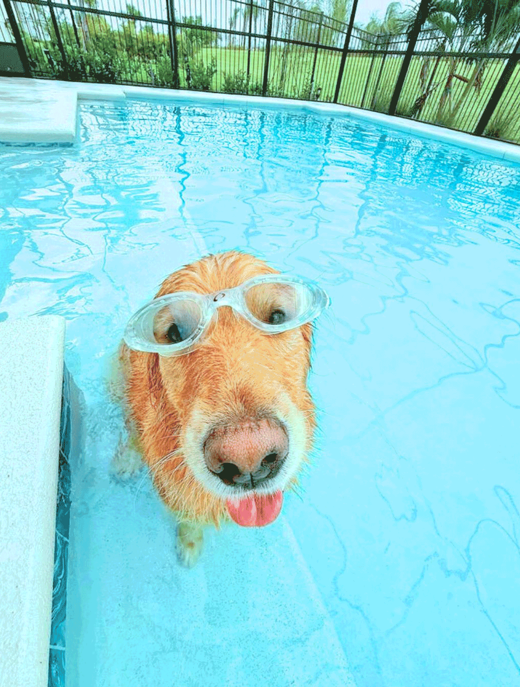

An echo is never exactly the same as the original sound. The more something repeats, the more it shifts, even if the change is small. Digital images work the same way. Every time they are saved, shared, or compressed, they lose a little bit of clarity and pick up tiny imperfections.
I think that’s why looping GIFs feel different after watching them for a while. It’s the same moment repeating, but it slowly feels altered. The glitch becomes a reminder that nothing in the digital world stays untouched, and what looks like a mistake is really just part of the image evolving.
